Hello, Virtual TJBot
BMXUG TJBotFan
IBM Champion
Shoichiro Sakaigawa / @l_s_s_l
What’s Virtual TJBot
物理のTJBotを手に入れる前に試したい・実機ハンズオンでTJBotは無いけど同等のコマンドが試せないかということで
Node-REDのフローエディタ上で動作するVirtual TJBotを紹介します。
このプレゼンテーションでは、Node-REDの構築からVirtual TJBotの設定までを自動的に行うことができるVirutal-TJBot-Starterというパッケージを利用します。
https://bit.ly/virtualTJBot
どうやって動いているの？
Virtual TJBotは、Node-REDのVirutal TJBotノードを利用して稼働しています。
ここで紹介するのはIBM Cloud上のCloud Foundry Node.jsサービスを利用したNode-REDのプラットフォーム上へ自動設定を行う方法です。
この設定自動化によりどなたでもかんたんにハンズオン同等の環境を構築することが可能となります。
前提条件
- IBM Cloudライトアカウントもしくはそれ以上が必要
- 過去にNode-REDをIBM Cloudで立ち上げたことが無いこと
- このハンズオン中に過去Node-REDを動かしたことがある方は個別にご相談ください
- PCからアクセスすること
- 設定完了後はお好きなNode-REDのフローエディタが動けばどこでも問題ありません
設定方法
１. Virtual TJBot Starter Applicationのページへアクセスする
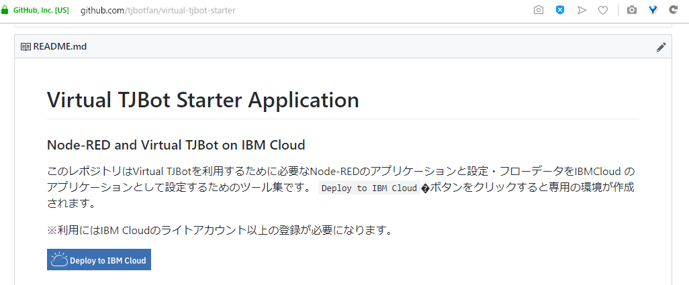
２． Deploy to IBM Cloudボタンをクリックする
３． IBM Cloudへログインしていない場合はここでログインを行う

４． IBM Cloudへのセットアップ画面になります。
ツールチェーン名などは、今回デフォルトのまま進みます。
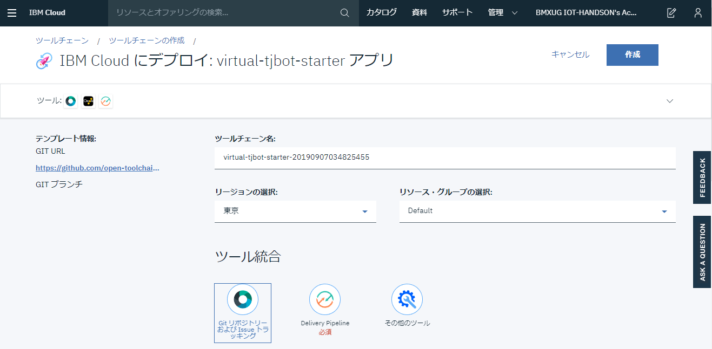
※Note：
ツールチェーンとは、gitやDelivery Pipelineという設定自動化を行うCI/CDツールが動くようセットアップされるグループをさします。
IBM Cloudツールチェーンは、DevOps項目から利用ができ、PaaS環境のセットアップやkubernetes環境へのアプリケーション配布などができる仕組みです。
５． 必須設定項目のDelivery Pipelineをクリックします。
６． IBM Cloud APIキー：と書かれた項目が現在空欄となっています。
この項目はみなさんのIBM Cloudカウントそれぞれに紐づく内容のため、
作成ボタンをクリックして生成します。
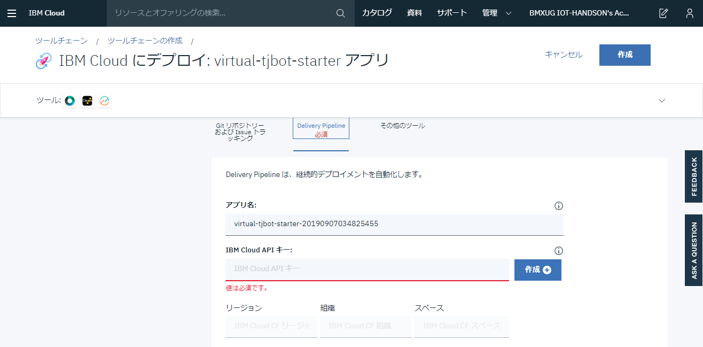
７． APIキーを新規作成するにあたり警告が表示されます。
この手順ではクラウドのサービスを自動的に作成する権限を持つAPIキー（合言葉）を作成・登録することになります。
細かくこの合言葉に対して許可する範囲をIAMという機能で設定が可能です。
今回は自動的にIBM Cloudのサービスを一部作成するため、
このまま作成をクリックします。
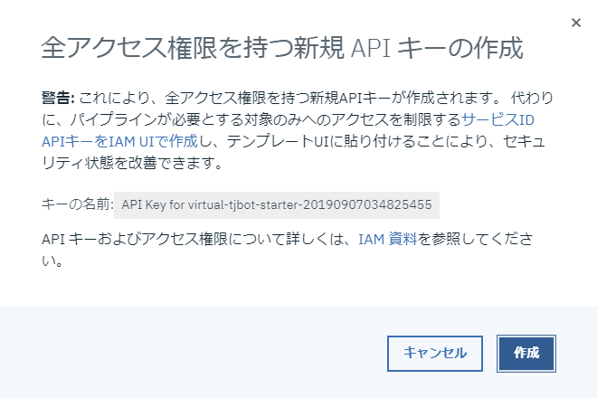
８． IBM Cloud APIキー:の項目、リージョン、組織、スペースが埋まったことを確認して、画面上部の作成をクリックします
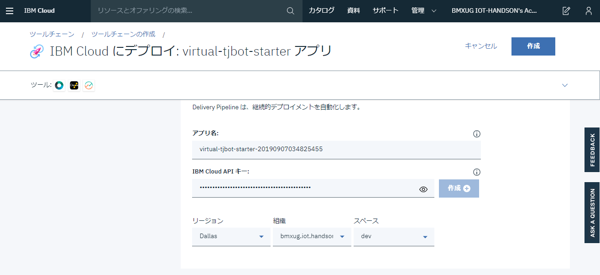
９．これでVirtual TJBotを起動する準備ができました。
画面中央のDelivery Pipelineをクリックして完了状態を確認しましょう。
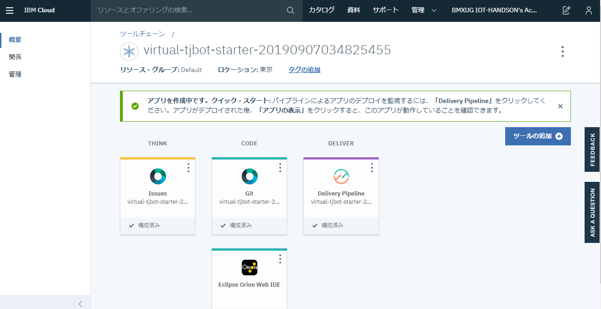
失敗してしまった
１０． 失敗してしまう場合は・・・
Deployの項目にある再生ボタンをクリックします。
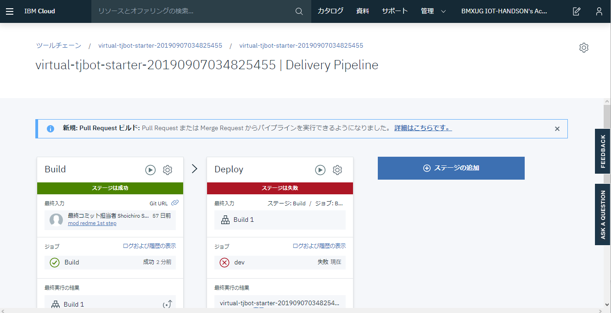
※失敗する理由：
さまざまな理由が考えられますが、IBM Cloud内での処理プロセスのなかでタイムアウトなどが起こりエラーが発生する場合があります。３回ほど試しても進まない場合は、スタッフへご相談ください
１１． 設定の完了
Deployの項目が緑になり、ステージは成功となったら完了です。
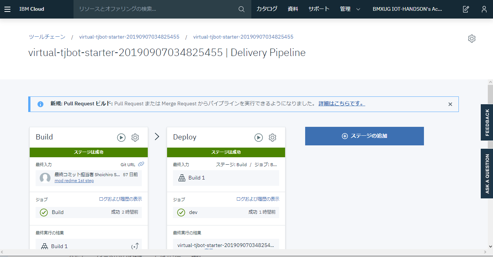
１２． ブラウザの戻るボタンで戻り、画面上部のアプリURLにアクセスをクリックします。
１３． Node-REDの初期ウィザードが表示されます。Nextをクリックします。
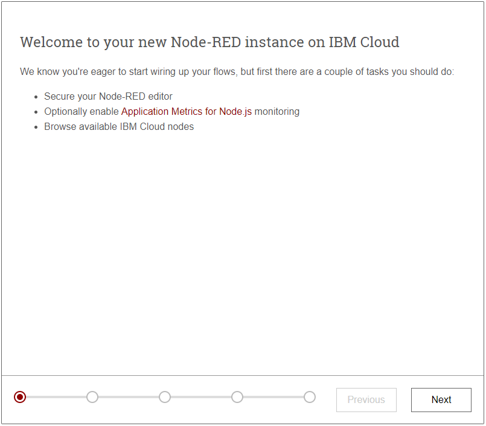
１４． Node-REDのフローエディタをアクセスする際に必要なUsernameとPasswordを決めて、Nextをクリックします。
※チェックボックスにチェックを入れると、フローエディタを読み取り専用で開くことができるようになります。
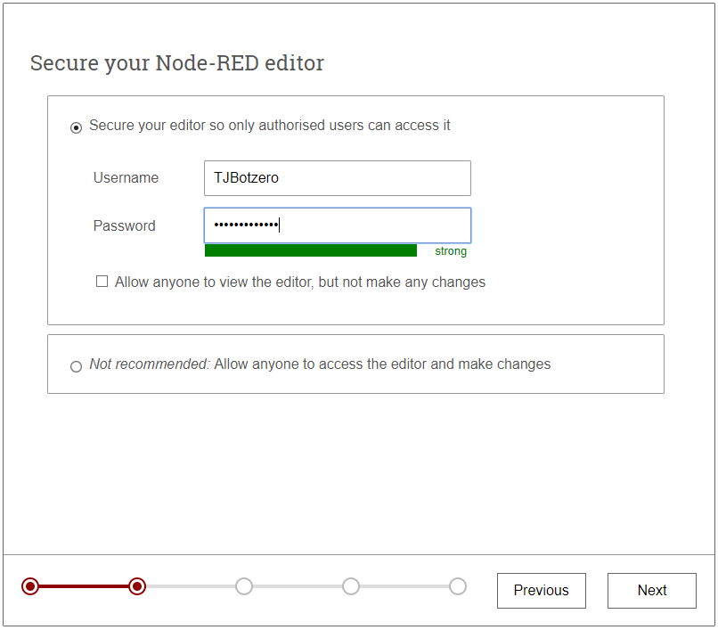
１５． Nextをクリックします
ここでは詳細を説明しませんが、アプリケーション稼働状況（CPU/メモリなど）を表示する場合はURLを控えてチェックをオンにします。
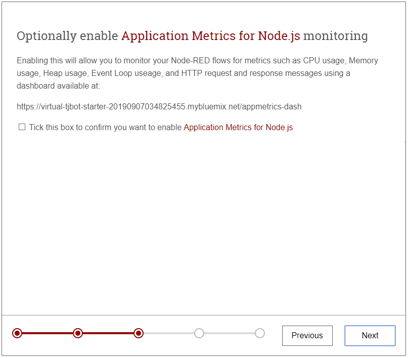
１６． IBM CloudとNode-REDを組み合わせて使うにあたり便利なNodeの紹介です。
ここでは何もせずNextをクリックします

１７． Finishをクリックしてインストールの完了です。
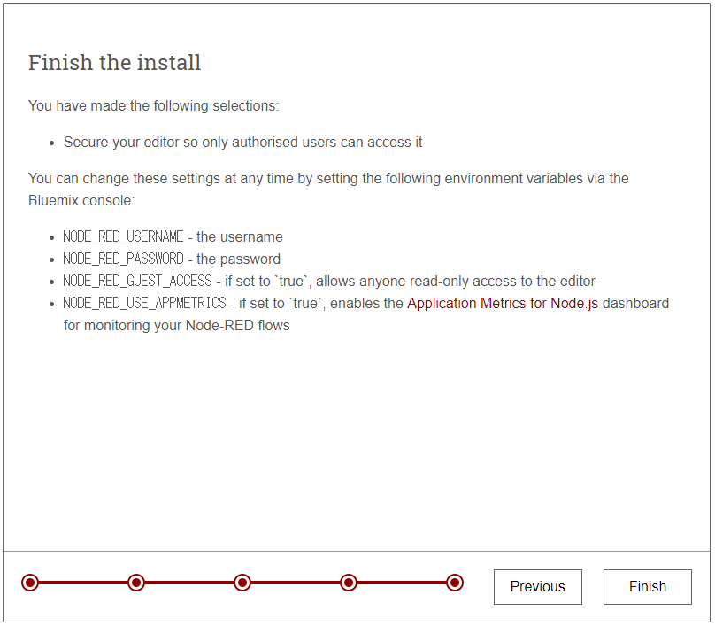
操作編
１． 設定作業が完了すると、ログイン手前の画面が表示されます。
この画面がログインURLになるので、適宜ブックマークなどしておくと良いでしょう。
Go to your Node-RED flow editorボタンをクリックして進みます。
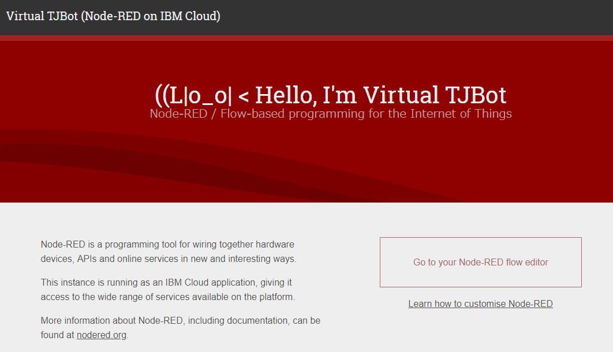
２．設定編で設定したUsernameとPasswordを入力してログインをクリックします。
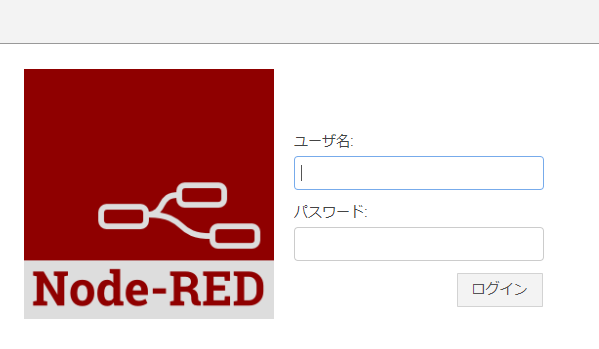
３．フローエディタが表示されます。
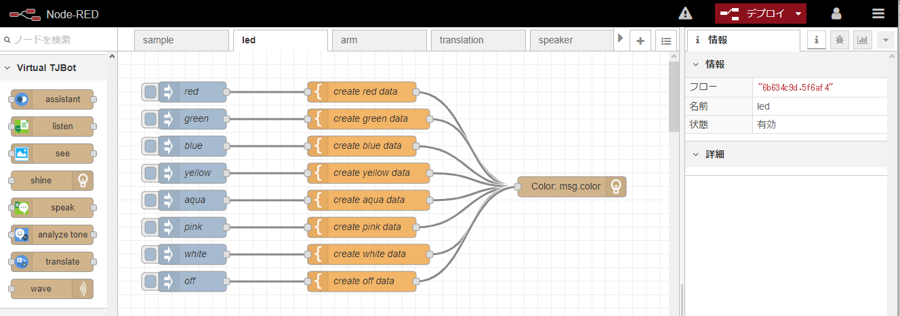
４．Virtual TJBotのパネルを開きます。
画面右上の▼記号をクリックして、Virtual TJBotをクリックします。
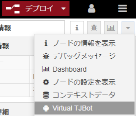
５．Sampleタブの(2) Blink LEDのフローが自動で起動して、色が順番に変わっていきます。
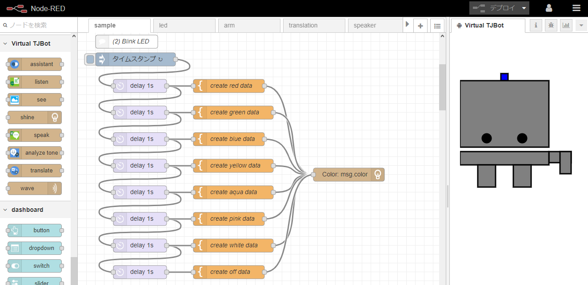
Virtual TJBotと物理のTJBotとの違い
ここまででVirtual TJBotの起動について紹介しました。
TJBotFanのハンズオンで使用されているNode-REDフローが、
Virtual TJBot版に移植されています。
ここでは、物理のTJBotで実現していたものを、
Virtual TJBotではどのように置き換えをしているのか差分を紹介します。
ハンズオンフローの対比表
| 物理版 | VirtualTJBot |
|---|---|
| IPアドレスをしゃべる | 廃止 |
| カメラで人物判定 | opencv機能から、Watson VisualRecognitionに変更 |
ノードの対比表
| 物理版 | VirtualTJBot |
|---|---|
| take photo node | see ノードを組み合わせたフローに変更(ブラウザからWebカメラを使用) |
| control led(GPIO) | shine ノードに変更（Virtual TJBotタブで頭が光る) |
| control arm(GPIO) | waveノードに変更（Virtual TJBotタブで手を振る） |
| open jtalk | Play audioに変更(端末OSの音声合成機能に依存) |
ここまででVirtual TJBotのセットアップと說明は終了です。
おうちでもぜひTJBotと遊んでみてください
告知1
TJBotFANグループ：
https://tjbotfan.tokyo
Facebook / Twitterなども↑から
告知2
技術書典7 に出店します（し23D）